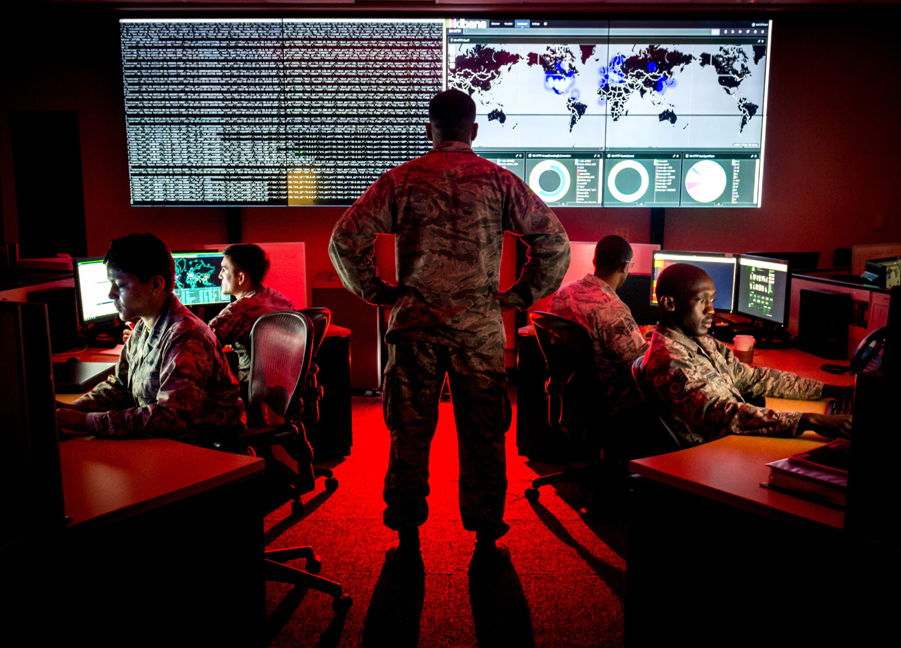
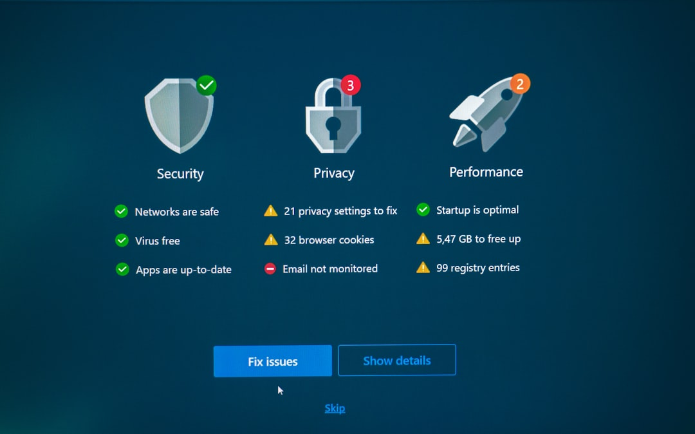
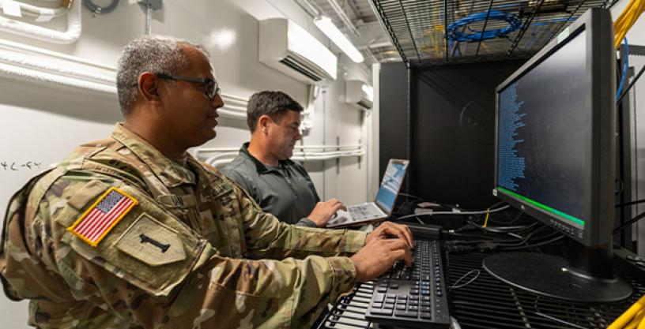

The newest frontier in military technology, from electronic warfare to cyber defense systems, protecting critical infrastructure and maintaining information superiority.

The United States cyber warfare infrastructure began developing in the late 20th century as computers and networks became essential to national security. Early efforts were mostly defensive and uncoordinated across agencies like the Department of Defense. Events such as the Morris Worm exposed major vulnerabilities, pushing the government to start building stronger cybersecurity systems.
After the September 11 attacks, cyber warfare became a national priority. The creation of the United States Cyber Command in 2009 centralized operations and marked a shift toward both defense and offensive capabilities. The U.S. began integrating cyber strategies into military planning and protecting critical infrastructure.
Today, U.S. cyber infrastructure is highly advanced and coordinated. Agencies like the Cybersecurity and Infrastructure Security Agency focus on threat detection, response, and resilience. With growing threats like ransomware and cyber espionage, the U.S. continues to evolve its systems using new technologies and partnerships.

U.S. military offensive cyber operations began developing in the late 1990s as the government recognized that cyber tools could be used not just for defense, but to disrupt adversaries. Early efforts were limited and often classified, with agencies like the Department of Defense exploring ways to interfere with enemy communications and networks. These operations were not yet fully integrated into military strategy, but they laid the groundwork for future capabilities.
After the September 11 attacks, offensive cyber operations became more structured and strategic. The establishment of the United States Cyber Command in 2009 allowed the military to coordinate and execute cyberattacks alongside traditional operations. This included targeting terrorist networks, disabling enemy systems, and supporting missions in conflicts like Iraq and Afghanistan through digital means.
Today, U.S. offensive cyber operations are a key part of military power. Under United States Cyber Command, the U.S. can carry out precise cyberattacks to disrupt infrastructure, gather intelligence, and deter adversaries. These operations are often integrated with other military actions and rely on advanced technologies, making cyber warfare a central element of modern combat strategy.

U.S. military defensive cyber operations began in the late 1990s as the military recognized the need to protect its growing digital networks. Early efforts focused on securing systems within the Department of Defense, but they were fragmented and reactive. Over time, specialized teams—such as cyber protection units—were created to monitor networks, detect threats, and respond to intrusions, forming the foundation of todays defensive posture.
After the September 11 attacks, defensive cyber operations became more organized and mission-critical. The establishment of United States Cyber Command centralized efforts to defend military networks and support combat operations. This included protecting the Department of Defense Information Network (DoDIN), sharing threat intelligence, and conducting proactive “hunt” missions to find and stop cyber threats before they cause damage.
Today, the U.S. militarys defensive cyber posture is highly advanced and proactive. Units continuously monitor systems, use artificial intelligence and automated tools, and coordinate globally to defend against cyberattacks in real time. New initiatives—such as defensive cyber units in the United States Space Force—highlight the focus on protecting critical systems during operations. The modern approach emphasizes resilience, rapid response, and constant adaptation to evolving cyber threats.
U.S. military electronic warfare (EW) dates back to early 20th-century signal interception but became especially important during World War II, when forces used radio jamming and radar disruption to gain advantages. Early EW focused on intercepting enemy communications and interfering with radar systems. After the war and into the Cold War, the U.S. maintained these capabilities, but emphasis declined at times as conventional warfare took priority.
Following conflicts in Iraq and Afghanistan, electronic warfare saw a major revival. Around the mid-2000s, the U.S. military rebuilt its EW capabilities to counter threats like improvised explosive devices, which relied on radio signals. New organizations, training programs, and equipment were developed to detect, jam, and disrupt enemy communications. This period marked a shift toward integrating EW into everyday military operations and recognizing it as essential to modern combat.
Today, U.S. electronic warfare is a critical part of military strategy, focused on controlling the electromagnetic spectrum. Modern systems can jam communications, disable radar, and support cyber operations, often without direct physical conflict. The military now integrates EW with cyber and intelligence capabilities, using advanced technologies and dedicated units to achieve “spectrum dominance.” As warfare becomes more digital, electronic warfare continues to evolve as a key tool for gaining battlefield advantage.
U.S. cyber intelligence began developing as traditional signals intelligence (SIGINT) expanded into digital networks in the late 20th century. Early efforts focused on intercepting communications and monitoring foreign computer systems as the internet became more widely used. Agencies within the Department of Defense and the intelligence community began adapting existing intelligence methods to track cyber threats and collect digital information from adversaries.
After the September 11 attacks, cyber intelligence became a central part of national security strategy. Intelligence agencies increased their focus on identifying terrorist communications and cyber-enabled threats. Organizations like the National Security Agency (NSA) played a major role in expanding global cyber surveillance and analysis capabilities, while coordination with military cyber units improved through structures like U.S. Cyber Command. This period marked a shift toward integrating cyber intelligence directly into military planning and operations.
Today, U.S. cyber intelligence is highly advanced and deeply integrated across defense and intelligence agencies. It focuses on detecting cyber threats, attributing attacks to specific actors, and providing real-time intelligence for both defensive and offensive operations. Using artificial intelligence, global sensor networks, and data analysis tools, agencies monitor adversaries' digital activity continuously. Cyber intelligence now plays a critical role in preventing attacks, supporting military missions, and shaping U.S. responses to global cyber threats.

U.S. military cyber maintenance and continuous security posture refers to the ongoing process of keeping defense networks secure, updated, and resilient against attacks. Early on, cybersecurity was mostly reactive—systems were patched after vulnerabilities were discovered, and maintenance was handled separately across different military branches within the Department of Defense. As reliance on digital systems grew, it became clear that constant upkeep was necessary to prevent breaches and system failures.
After the creation of U.S. Cyber Command, the military shifted toward continuous monitoring and proactive defense. This included routine patch management, system hardening, vulnerability scanning, and real-time monitoring of the Department of Defense Information Network (DoDIN). Instead of periodic security checks, the military adopted a “always-on” posture where networks are continuously assessed and defended against threats as they emerge
Today, the U.S. maintains a continuous security posture known as “defense-in-depth,” where multiple layers of security work together to prevent, detect, and respond to threats at all times. Automated tools, artificial intelligence, and global cyber teams constantly monitor systems, apply updates, and respond to anomalies in real time. This approach ensures that military networks remain resilient, minimizing downtime and reducing the risk of successful cyberattacks.